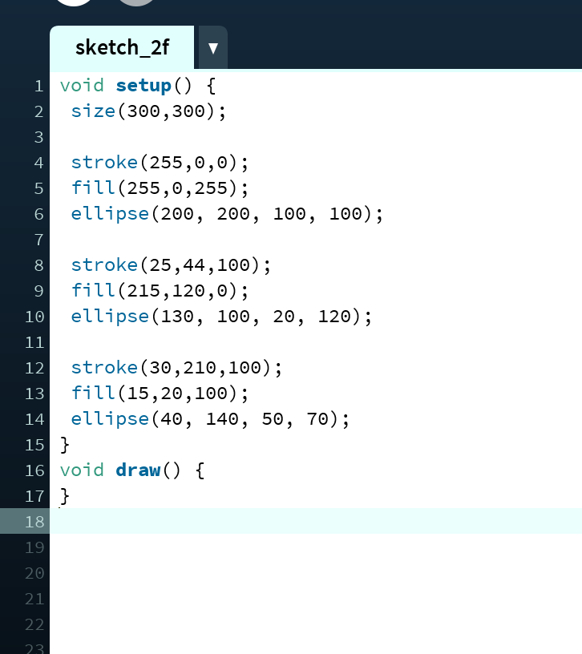
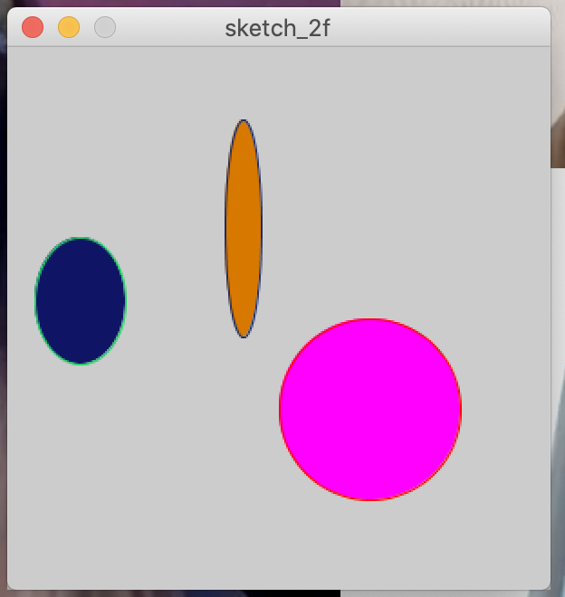
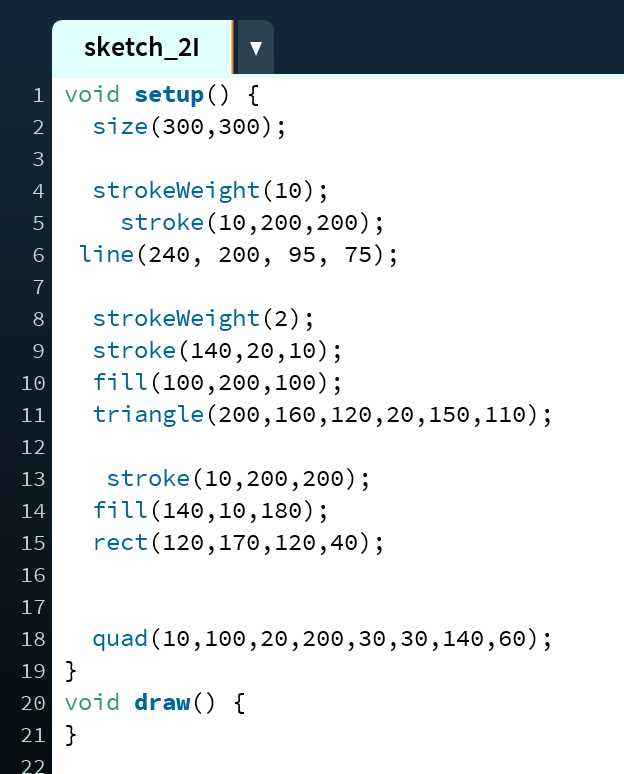
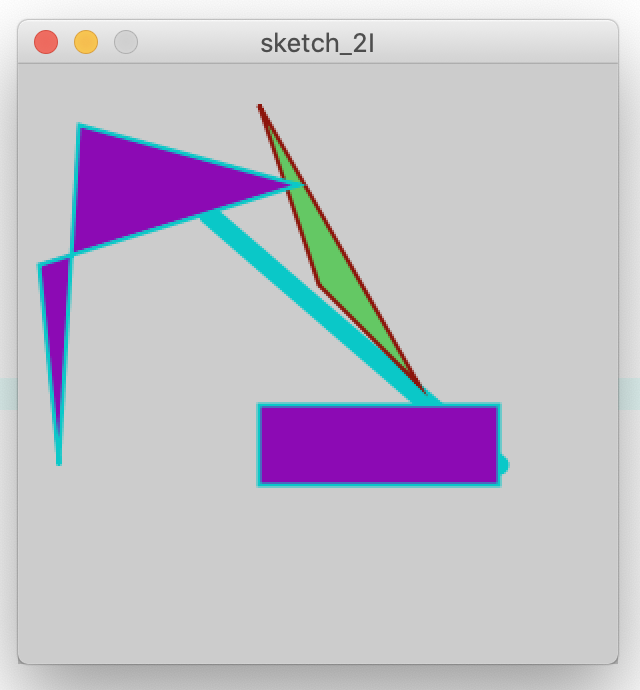
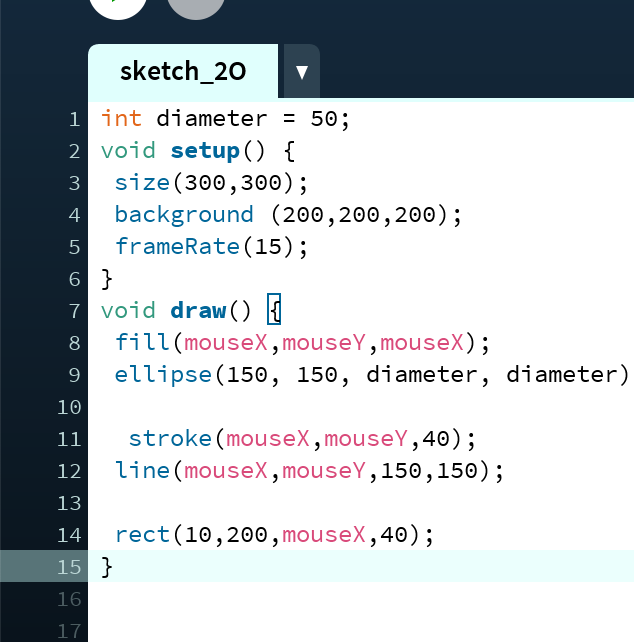
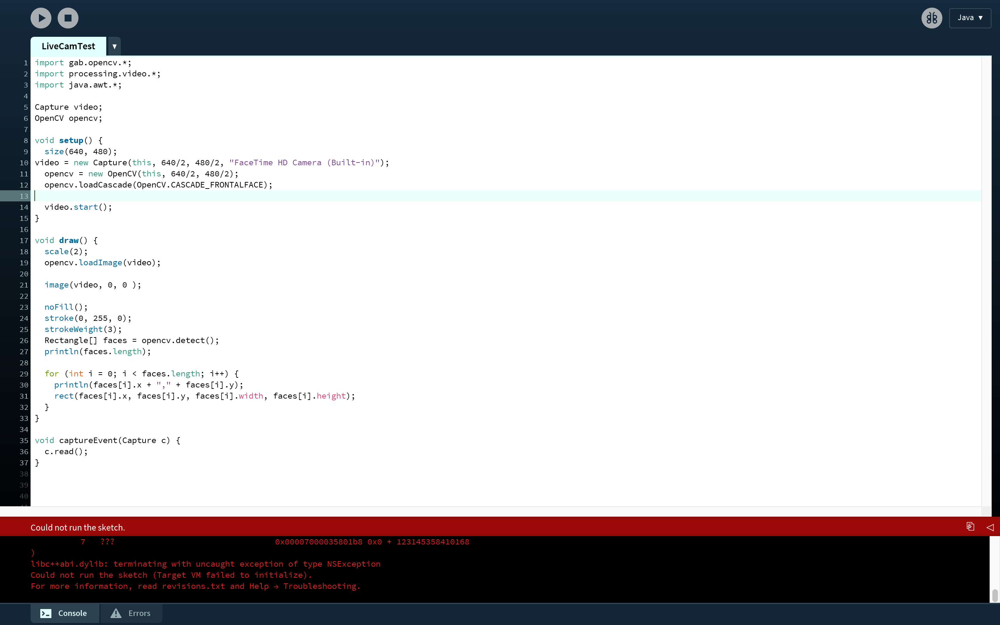
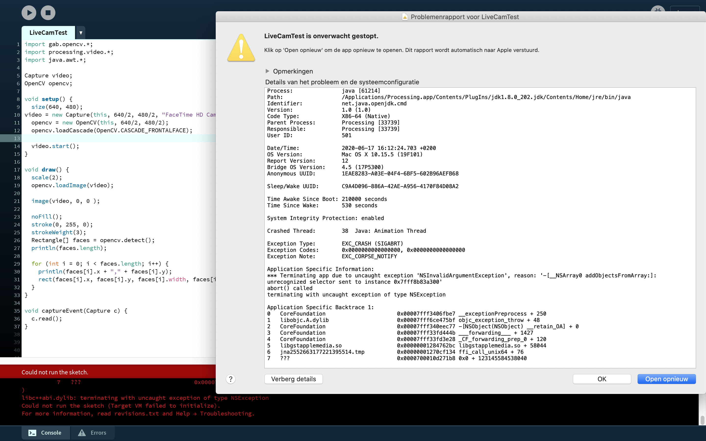
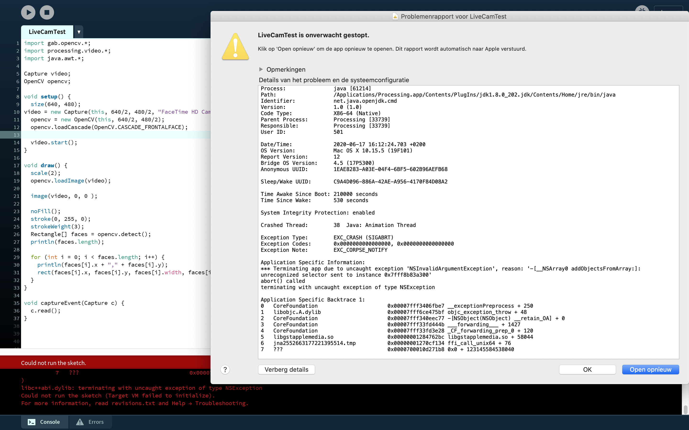
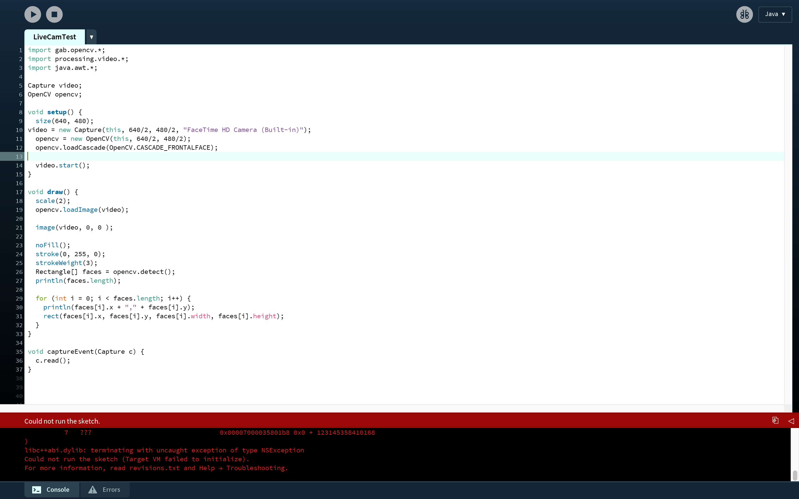
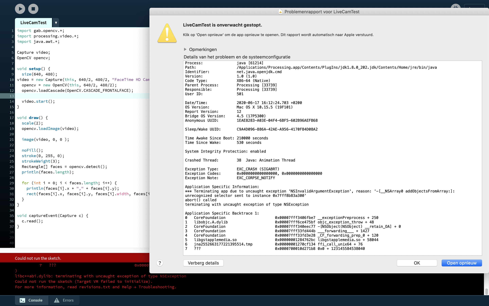

Processing
Hier staan opdracht 2F, 2I, 2O, 3B, 3D en 4B weergeven.
2F
2I
2O
Screenshots van foutmelding Livecamtest op Mac
 

Hier staan opdracht 2F, 2I, 2O, 3B, 3D en 4B weergeven.
Screenshots van foutmelding Livecamtest op Mac
